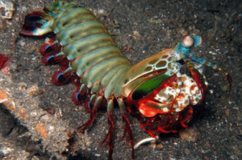
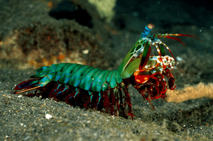
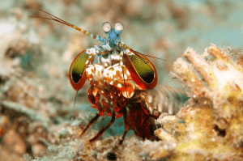
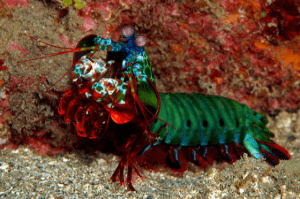
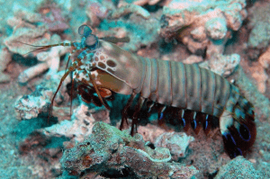

Mantis Shrimp
The most colourful killer in the underwater world
Mantis shrimps, or stomatopods, are marine crustaceans which branched from other members of their class around 200 million years ago. They typically grow to around 10cm (3.9 in) in length, while a few can reach up to 38cm (15 in). They are among the most important predators in many shallow, tropical and subtropical marine habitats in the Indian and Pacific Oceans.
Beware of their abilities
They are aggressive and typically solitary and spend most of their time hiding in rock formations or burrowing intricate passageways in the sea bed. However, unlike most crustaceans, they sometimes hunt, chase, and kill prey either by spearing, smashing, stunning, or dismembering. Mantis shrimps have a powerful second pair of thoracic appendages that has been highly adapted for powerful close-range combat. Some mantis shrimp species have specialised "clubs" that can strike with great power, while others have sharp forelimbs used to seize the prey (hence the term "mantis" in its common name). Mantis shrimp are commonly separated into two distinct groups determined by the type of claws they possess:
- Smashers: they strike with blinding quickness, so rapidly that they generate vapor-filled bubbles in the water between their claws and the prey. This means that the prey is hit twice by a single strike; first by the claw with instantaneous forces of 1,500 newtons, and then by the collapsing bubbles that immediately follow. Even if the initial strike misses the prey, the resulting shock wave can be enough to stun or kill. Smashers use this ability to attack snails, crabs, molluscs, and rock oysters, their blunt clubs enabling them to crack the shells of their prey into pieces.
- Spearers: they are armed with spiny appendages topped with barbed tips, used to stab and snag prey. Unlike smashers, however, they prefer the meat of softer animals, such as fish, which their barbed claws can more easily slice and snag.
Both types strike by rapidly unfolding and swinging their raptorial claws at the prey, and can inflict serious damage on victims significantly greater in size than themselves.





FUN FACTS
- Mantis shrimp eyes are thought to be the most complex in the animal kingdom and to have the most complex visual system ever discovered. They can see between 12 and 16 times more colours than humans. Furthermore, some species can tune the sensitivity of their long-wavelength colour vision to adapt to their environment.
- A publication by researchers from the University of Queensland stated that the compound eyes of mantis shrimp can detect cancer and the activity of neurons.
- While some aquarists value mantis shrimps, others consider them harmful pests, because they are voracious predators, eating other inhabitants of the tank.
- During mating rituals, mantis shrimps actively fluoresce, and the wavelength of this fluorescence matches the wavelengths detected by their eye pigments.
- They can employ their weapons with an acceleration of 10,400 g (102,000 m/s2 or 335,000 ft/s2) and speeds of 23 m/s (83 km/h; 51 mph) from a standing start.
- Mantis shrimp can perceive wavelengths of light ranging from deep ultraviolet (UVB) to far-red (300 to 720 nm) and polarized light.
- Some species of mantis shrimp are consumed in Japanese, Vietnamese, Cantonese, Mediterranean, Philippine and Hawaiian cuisine.
- Some saltwater aquarists keep stomatopods in captivity. The peacock mantis is especially colourful and desired in the trade.
- Their varieties range in color from shades of brown to vivid colors, including pale and fluorescent colors.
- The largest mantis shrimp ever caught had a length of 46cm (18 in); it was caught in Florida (USA).
- The eyes of the mantis shrimp can move independently of each other.
- There are more than 450 species of mantis shrimps being known.
- There are accounts of mantis shrimps breaking glass tanks.